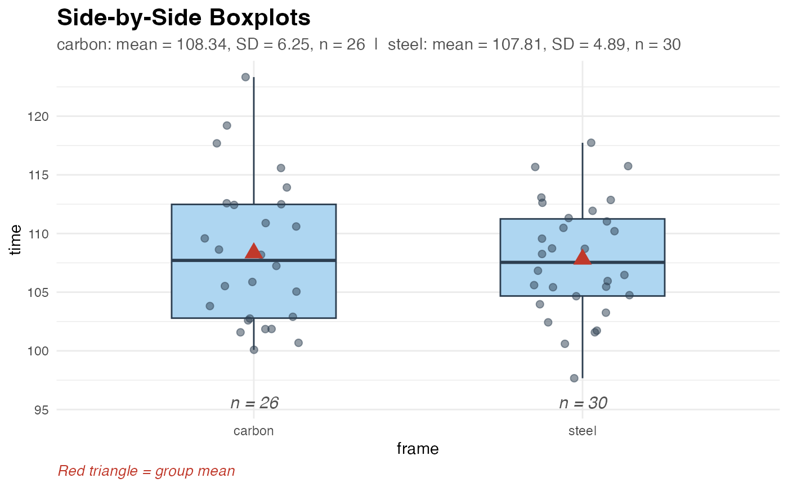

Ride times for cyclists using two different bike frame types – carbon and steel. Used in Chapter 6 of ISI for two-mean hypothesis tests and confidence intervals. This is a randomized experiment, making causal conclusions appropriate.
Format
A data frame with 56 rows and 2 variables:
- frame
Bike frame type:
"carbon"or"steel"- time
Ride time (minutes)
Examples
head(biketimes)
#> # A tibble: 6 × 2
#> frame time
#> <chr> <dbl>
#> 1 steel 116.
#> 2 steel 116.
#> 3 steel 109.
#> 4 steel 118.
#> 5 steel 113.
#> 6 steel 110.
explore_2vars(formula = time ~ frame, data = biketimes)

test_2mean(
formula = time ~ frame,
data = biketimes,
alternative = "two.sided",
method = "theory"
)
#> ✔ Data extracted from "time" ~ "frame":
#> • steel: x-bar = 107.8089, s = 4.8917, n = 30
#> • carbon: x-bar = 108.3436, s = 6.248, n = 26
#>
#> ── 2-Sample Means Hypothesis Test (Theory) ─────────────────────────────────────
#> ℹ steel: x-bar = 107.8089 | s = 4.8917 | n = 30
#> ℹ carbon: x-bar = 108.3436 | s = 6.248 | n = 26
#> ℹ Null Hypothesis: mu1 - mu2 = 0
#> ℹ Alternative: mu1 - mu2 != 0
#> • Observed Difference (x-bar1 - x-bar2): -0.5347
#> • SD of Null Distribution: 1.5163
#> • Test Statistic (T): -0.353
#> • P-Value: 0.7259
ci_2mean(
formula = time ~ frame,
data = biketimes,
conf_level = 0.95,
method = "theory"
)
#> ✔ Data extracted from "time" ~ "frame":
#> • steel: x-bar = 107.8089, s = 4.8917, n = 30
#> • carbon: x-bar = 108.3436, s = 6.248, n = 26
#>
#> ── 95% Confidence Interval for Difference in Means (Theory) ────────────────────
#> ℹ steel: x-bar = 107.8089 | s = 4.8917 | n = 30
#> ℹ carbon: x-bar = 108.3436 | s = 6.248 | n = 26
#> ℹ Point Estimate (x-bar1 - x-bar2): -0.5347
#> ℹ SD of Sampling Distribution: 1.5163
#> • Interval: (-3.5848, 2.5154)